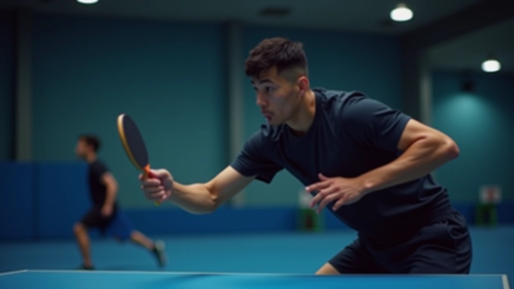
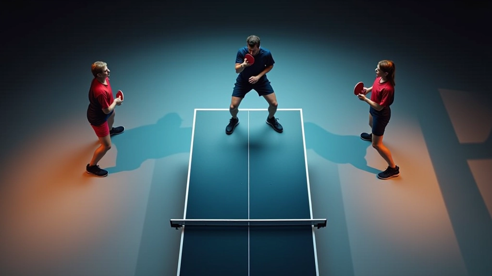
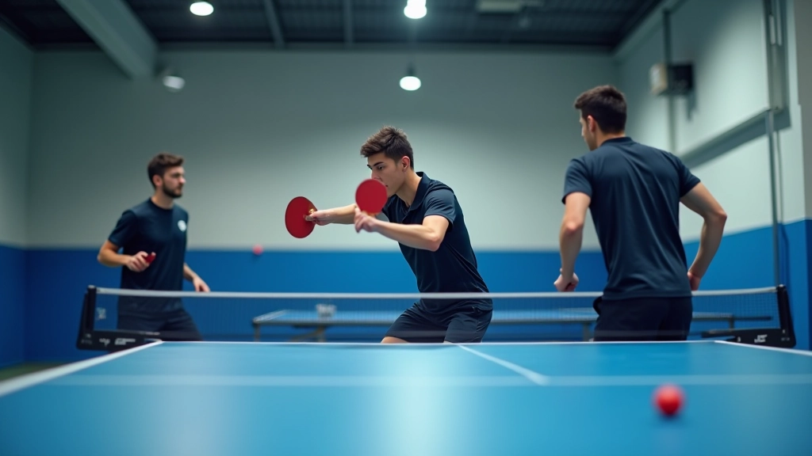
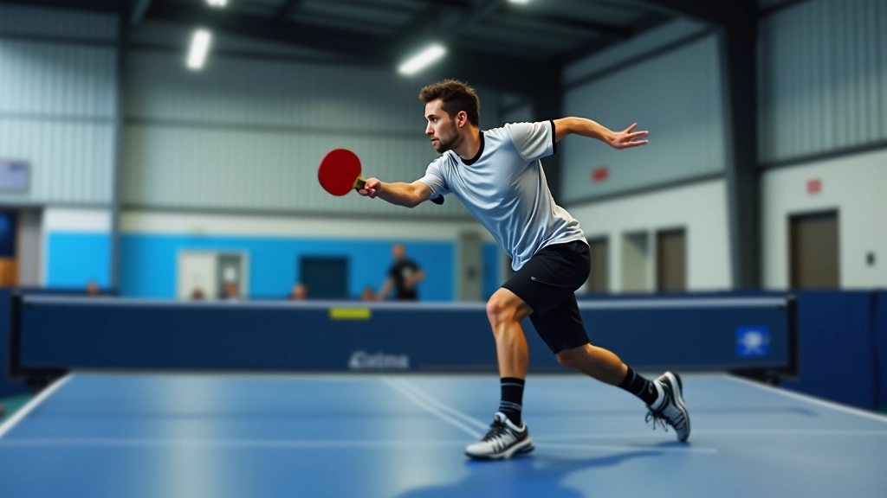

التوقيت والحركة: المفاتيح الثلاثة
اكتشف كيف يحسن اللاعبون المحترفون توقيتهم وحركتهم. ثلاث مبادئ أساسية تغير طريقة لعبك.
اقرأ المقالةشرح مفصل لأساسيات الهجوم المضاد وكيفية تطبيقها من البداية. تعلم الوضعية الصحيحة والتوقيت المثالي لتحسين أدائك في تنس الطاولة.

الهجوم المضاد هو تقنية هجومية تستخدمها عندما يضرب خصمك الكرة بقوة نحوك. بدلاً من الدفاع السلبي، أنت تأخذ زمام المبادرة وترد الكرة بقوة أكبر. الفكرة الأساسية بسيطة: تحويل دفاع ضعيف إلى هجوم قوي.
يعتقد كثيرون أن الهجوم المضاد تقنية متقدمة، لكن الحقيقة أنك تستطيع تعلم الأساسيات من البداية. ستحتاج إلى فهم صحيح للوضعية والتوقيت والحركة. هذا الدليل يغطي كل ما تحتاج معرفته للبدء.


الوضعية هي الأساس. إذا كنت واقفاً بطريقة خاطئة، لن تتمكن من تنفيذ الهجوم المضاد بفعالية. قدماك يجب أن تكونا بعرض الكتفين تقريباً. الركبتان منحنيتان قليلاً، وليس مستقيماً كالعصا.
قضينا الساعات في التدريب على هذه الوضعية. تبدو بسيطة، لكنها تحتاج إلى ممارسة. بعد أسبوعين من التدريب المنتظم، ستصبح طبيعية تماماً.
هذا الدليل يقدم معلومات تعليمية عن تقنيات تنس الطاولة. كل لاعب مختلف، وما يناسب شخصاً قد لا يناسب آخر. إذا كنت جديداً تماماً في اللعبة، يُنصح باستشارة مدرب متخصص في البداية. التطبيق العملي تحت إشراف متخصص يضمن تطوراً أسرع وأكثر أماناً.
التوقيت هو الفرق بين هجوم مضاد قوي وكرة تطير بعيداً عن الطاولة. يجب أن تضرب الكرة في أعلى ارتفاعها — هذه اللحظة التي تكون فيها الكرة على ارتفاع حوالي 30 سم فوق الطاولة. إذا انتظرت طويلاً، ستنخفض الكرة وستحتاج إلى ضرب كرة منخفضة.
كيف تتعلم التوقيت الصحيح؟ بالممارسة والملاحظة. اطلب من شريك التدريب أن يرسل نفس النوع من الكرات مراراً وتكراراً. بعد 50-100 محاولة، ستبدأ في الشعور بالتوقيت. لا تتسرع — التطور تدريجي.


الحركة الصحيحة تعني أنك تستطيع الوصول إلى الكرة بسهولة. لا تقف في مكان واحد وتتمدد لضرب الكرة. بدلاً من ذلك، خذ خطوات صغيرة سريعة للوصول إلى موضع الكرة. هذه تسمى "خطوات الرقص" — خطوات صغيرة سريعة تحافظ على توازنك.
من البداية، يجب أن تركز على شيء واحد: الحركة قبل الضربة. أولاً تتحرك، ثم تضرب. لا تحاول ضرب الكرة وأنت تتحرك في نفس الوقت. هذا يأتي لاحقاً عندما تصبح أكثر خبرة.
قف أمام المرآة وتدرب على الوضعية الصحيحة. لا تحتاج إلى طاولة في البداية. فقط تأكد من أن جسمك في الموضع الصحيح. كرر هذا يومياً لمدة 15 دقيقة.
الآن استخدم الطاولة. اطلب من شريك أن يرسل لك كرات بطيئة وقويمة. ركز على ضرب الكرة في أعلى ارتفاعها فقط. لا تقلق بشأن القوة — ركز على التوقيت.
الآن أضف الحركة. اطلب من شريكك أن يرسل الكرات إلى أماكن مختلفة. تدرب على الحركة نحو الكرة قبل ضربها. هذا هو الجزء الذي يحتاج إلى صبر.
ابدأ بتطبيق الهجوم المضاد في المباريات الودية. لا تتوقع أن تنجح في كل مرة. الخطأ جزء من التعلم. استمر في التدريب والممارسة.
تعلم الهجوم المضاد ليس معقداً كما يبدو. الخطوات الثلاث — الوضعية والتوقيت والحركة — هي كل ما تحتاجه للبدء. ستحتاج إلى صبر والكثير من الممارسة، لكن النتيجة تستحق العناء. بعد شهر من التدريب المنتظم، ستلاحظ تحسناً ملحوظاً في ردودك الهجومية.
ابدأ اليوم. لا تنتظر اللحظة المثالية. خذ مضربك وابدأ بالوضعية الصحيحة. كل لاعب محترف بدأ من حيث بدأت أنت — من الأساسيات. الفرق هو أنهم استمروا في التدريب.

فريق التحرير والمراجعة
يكتبها فريق أكاديمية تنس الطاولة التحريري، متخصص في شرح تقنيات الهجوم المضاد بطريقة عملية وسهلة الفهم.
اكتشف كيف يحسن اللاعبون المحترفون توقيتهم وحركتهم. ثلاث مبادئ أساسية تغير طريقة لعبك.
اقرأ المقالة
تقنيات متقدمة للهجوم المضاد على أنواع مختلفة من الكرات. تعلم كيفية التكيف بسرعة.
اقرأ المقالة
كيفية تطبيق تقنيات الهجوم المضاد تحت الضغط. استراتيجيات للفوز بالنقاط الحرجة.
اقرأ المقالة